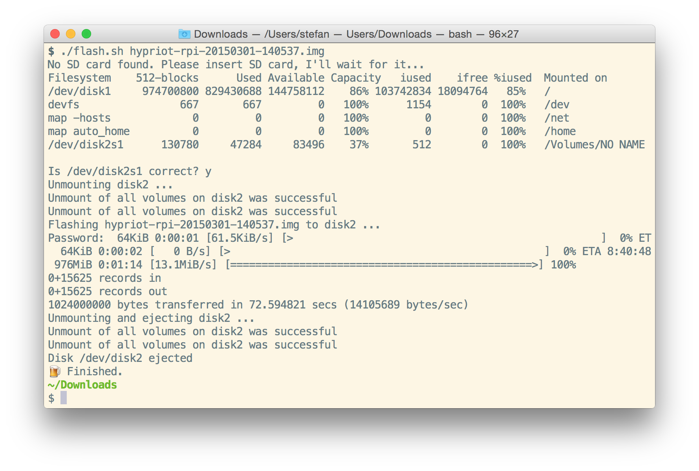
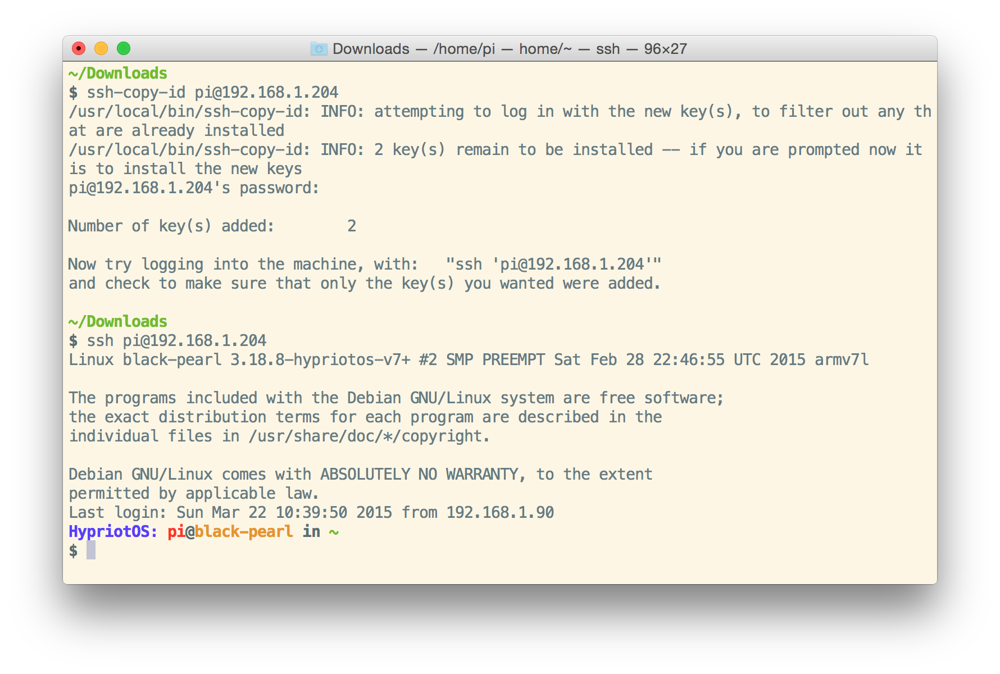

Docker on Raspberry Pi
The Raspberry Pi is for learning things. Now you also can start learning Docker on your cheap device.
Our small team at Hypriot started in January 2015 to make using Docker as simple as possible on the Raspberry Pi. You only need a Raspberry Pi B, B+ or Pi 2 and an empty SD card to get started.
Installation
Download SD Image
Download the lastest Hypriot SD card image
curl -o hypriot-rpi-20150301-140537.img.zip http://assets.hypriot.com/hypriot-rpi-20150301-140537.img.zip
Download flash.sh
I've written a small helper script for my Mac to make the flashing part a very easy step. I've put my flash.sh script into a Gist
curl -o flash.sh https://gist.githubusercontent.com/StefanScherer/debaf068e398df13be68/raw/f879333854e25c2994f6f276bec6aa3c57c73758/flash.sh
chmod +x flash.sh
Extract the ZIP
One thing that I have to improve in the flash.sh script is to extract the Image automatically. At the moment you have to extract the ZIP with
unzip hypriot-rpi-20150301-140537.img.zip
Flash SD image
Now run the script with the name of the SD card image.
./flash.sh hypriot-rpi-20150301-140537.img

The script searches for an SD card plugged into your Mac. You can even start the script before inserting the SD card, it will wait for you. The script has a security prompt if you really want to flash onto the shown SD card. Enter y and then enter your root password to start flashing.
If you have installed pv as well (perhaps with brew install pv) then you also get a nice progress bar while flashing. (But at the moment you have to enter your root password while the progress starts writing into the shell window.)
The script will "plop" after finishing, so you can do some other things wail waiting.
After that "plop" just remove the SD card as it is automatically unmounted by the flash.sh script.
Boot your Raspberry Pi
Insert the SD card into your Raspberry Pi and wait until it reboots. The first reboot is needed as we automatically increase the filesystem to the size of the whole SD card.
Find your Pi
If you have only one Raspberry Pi and don't know the IP address you may use the Adafruit Pi Finder script.
curl -o finder.sh https://raw.githubusercontent.com/adafruit/Adafruit-Occidentalis/master/finder.sh
chmod +x finder.sh
./finder.sh -t
ipconfig
Login
Log into the HypriotOS with user pi and password raspberry. You may also use the user root with password hypriot.
As a first step I normally copy my SSH public key to the Pi with
ssh-copy-id pi@ip-of-your-pi
Afterwards you can SSH into your Pi without a password

Docker 1.5.0 is already up and running and you can start playing with Docker on your Pi.